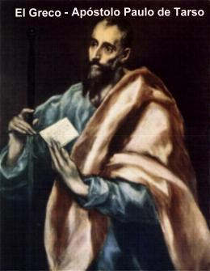
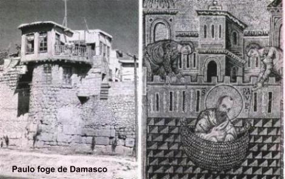
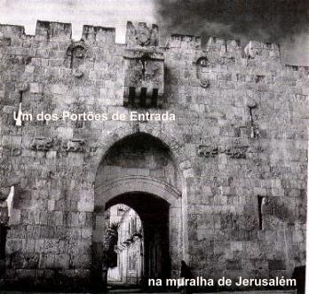
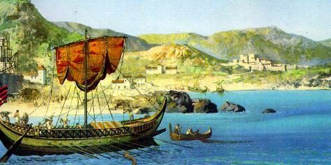
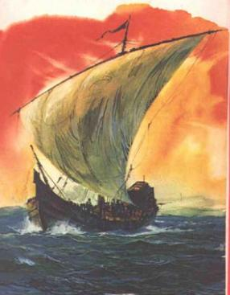

Todavia, Saulo mantinha-se tranquilo e sério. Ocupou o lugar de Rabi na Sinagoga e no momento oportuno, levantou-se e falou:
- "Perante vocês, meus irmãos, eu me declaro um grande pecador pelo martírio de Estevão e pela perseguição cruel que empreendi aos cristãos. Saí de Jerusalém para prender e castigar as famílias cristãs de Damasco, agindo como polícia do Templo, trazendo estas cartas (abriu a túnica e retirou as cartas) que me concedem autoridade. Entretanto, na estrada durante a viagem, JESUS CRISTO me apareceu e transformou a minha vida."
Gritos e palavrões foram ouvidos na assembléia pelas revelações dele e diversas vozes mais afoitas, manifestaram repulsa e o acusavam:
- "Mentiroso! Traidor! Blasfemo!"
Formou-se um violento tumulto, com imprecações e ameaças contra ele. Todavia, uma pessoa mais ponderada lembrou aos presentes, que eles se encontravam num Templo e que deveriam reprimir os impulsos violentos. Saulo tranquilo e com determinação continuou:
- "JESUS é o FILHO de DEUS, o verdadeiro DEUS que se fez homem para salvar a humanidade! Nunca negarei que sou fariseu e um benjamita, e que também sou cidadão romano, pelo mérito de meu pai Eleasar ser oficial do Imperador Augusto! Contudo, minha vida mudou, porque o SENHOR teve misericórdia de mim e mostrou-me a Verdade!"
Neste momento, alguns que não aceitavam os argumentos dele, abandonaram o Templo com suas famílias. Entretanto a sinagoga ainda permaneceu cheia de gente. Saulo continuou a falar:
- "Hoje conheço a verdade e posso lhes afirmar: nada neste mundo conseguirá emudecer a minha voz e deter o meu passo. Podem vir às angústias, as tribulações, a fome e todos os perigos, até a espada, nada me impedirá de servir ao SENHOR JESUS, meu e nosso DEUS."
E assim, falando com clareza, expôs as razões de sua conversão e o atual desígnio de trabalhar e difundir a doutrina cristã. Aos poucos foi conquistando a simpatia de uma boa parte daqueles que permaneceram no Templo, sobretudo porque compreenderam que o fato ocorrido, era um milagre, um autêntico chamado Divino. E desse modo, a Sinagoga permaneceu atenta e em silêncio, até o final de sua pregação.
Todavia, aqueles judeus que não acolheram as suas palavras, queriam vingança, cresceu neles um profundo ódio e ficaram verdadeiramente irritados com Saulo. Por essa razão, reuniram-se para decidirem o que fazer. Resolveram matá-lo.
Os cristãos assim que souberam
da trama, procuraram proteger Saulo com o maior 
CHEGADA A JERUSALÉM

Contudo, Barnabé, um fervoroso cristão, moço rico de Jerusalém que tinha vendido todos os seus bens para distribuir aos pobres, decidiu aproximar-se dele, pois também tinha sido seu colega na Escola de Gamaliel. Ouvindo os fatos descritos por ele, Barnabé compreendeu que verdadeiramente Saulo tinha se convertido e decidiu levá-lo a presença dos Apóstolos. Encontrou Pedro e Tiago Menor. Depois de apresentá-lo, ele lhes descreveu como na estrada de Damasco viu o SENHOR, que lhe falou e lhe deu a ordem de se encontrar com Ananias em Damasco; a milagrosa recuperação de sua visão, sua fuga para Arábia e a destemida pregação na Sinagoga dos judeus. Depois deste encontro, Saulo passou a viver no ambiente cristão. Pregava com firmeza os ensinamentos de JESUS tanto aos judeus cristãos como aos gregos convertidos ao cristianismo, muito embora ainda existisse uma certa desconfiança por parte de membros da Comunidade e de alguns Apóstolos, que muito discretamente, procuravam manter-se distantes dele, porque duvidavam de sua sinceridade.
Por outro lado, não
tardou a chegar ao conhecimento das autoridades do Sinédrio, a 
